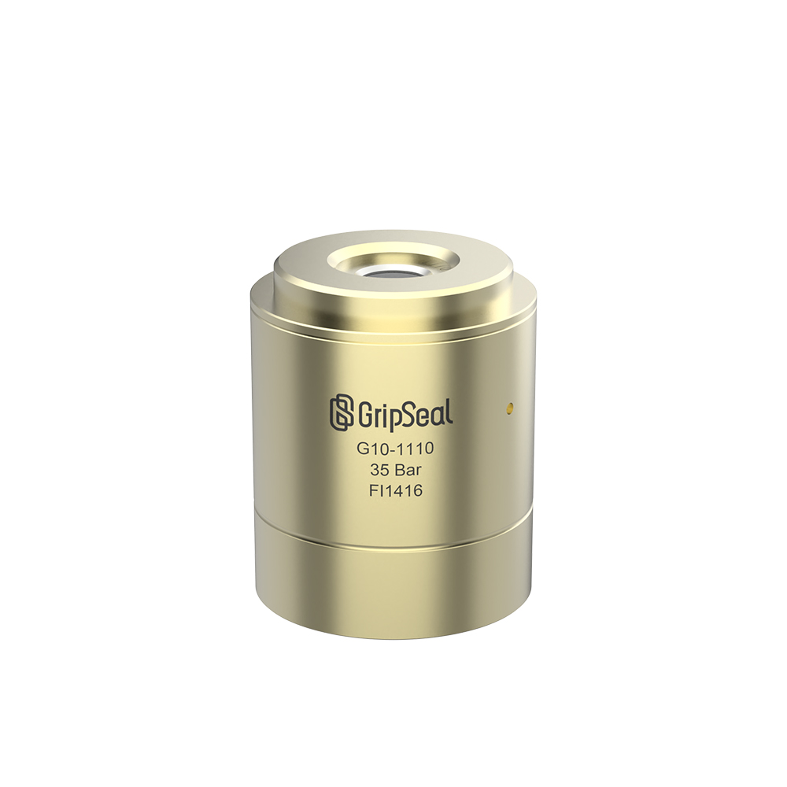

Shenzhen TB-TEK Technologies Limited.（Turbotai）旗下的工业测试方案平台，专注快速连接技术、泄漏检测方案与工业测试设备，服务全球制造商。

Shenzhen TB-TEK Technologies Limited.（Turbotai）于 2006 年成立于中国深圳，长期为全球制造商提供可靠、高效的连接与测试方案，是专注于快速连接技术、泄漏检测方案与工业测试设备的全球化工业测试方案提供商。
通过 IndustHub（www.industhub.com），我们提供工业连接工具与测试方案，其中包括 GripSeal 快速密封连接器与 TBTEK 差压式气密性检漏仪，帮助客户提升测试效率、可靠性与产线表现。
秉持「易夹持、可靠密封」的设计理念，GripSeal 连接器实现一秒连接、即时密封，缩短连接时间并提高测试稳定性。
GripSeal 连接器为快速、可靠的密封连接而设计，覆盖以下典型测试应用。
零件与管路的耐压、加压测试连接。
气动、液压回路的快速功能验证。
抽真空与真空密封工况的连接。
氦质谱检漏等高灵敏度检测工位。
燃油管、油路接口的密封连接。
气瓶阀口与充装接口的测试连接。
制冷回路、换热器与系统检漏。
按接口图纸评估非标密封结构。
我们的方案覆盖广泛的连接需求，可根据接口结构、介质、压力与节拍要求匹配合适的密封方式。
结合 TBTEK 差压式检漏技术，我们为工业制造流程提供从快速密封连接、准确泄漏检测到稳定产线表现的完整方案。
GripSeal 连接器一秒夹持、即时密封，减少装夹时间。
TBTEK 差压检漏仪提供稳定、可重复的泄漏判定。
连接接口与测试工装一次对齐，适配自动化节拍。
按接口图纸、介质与泄漏目标统一评估连接与检测方案。
我们的连接与测试方案已应用于以下行业。
凭借持续创新与以客户为中心的方案能力，Turbotai 帮助全球制造商连接更快、检测更智能、生产效率更高。